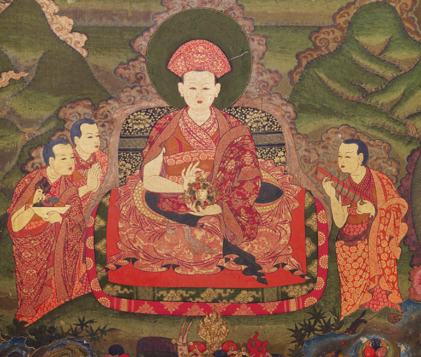

Jimzo, meaning “clay art” (with jim meaning clay and zo meaning art), is one of Bhutan’s oldest and most sacred traditional crafts.
Its origins trace back to the 7th century during the time of Tibetan King Songtsen Gampo, when pioneering temples such as Kichu Lhakhang and Jampa Lhakhang were built. Evidence of
early clay paintings from the time of Guru Rinpoche further shows that clay sculpting existed in Bhutan long before it was officially recorded.The art became more widespread during the time of Terton Pema Lingpa in the 15th century, and later, in the 17th century, it was formally codified as one of the Zorig Chusum—the thirteen traditional arts and crafts of
Bhutan—by the Fourth Druk Desi, Gyalse Tenzin Rabgye.
During the 17th century, Zhabdrung Ngawang Namgyal invited the great sculptor Trulku Dzing to Bhutan, who created remarkable clay figures in Punakha and Wangduephodrang Dzongs. Since
then, the techniques of jimzo have been passed down from master sculptors (Jimzo Lopoen) to students for generations. Bhutanese sculptors are well-known for their delicate craftsmanship,
strict precision, and deep devotion, as religious clay sculptures must follow exact iconographic measurements for the body, limbs, facial features, ornaments, and attire. Creating these
statues is considered a highly spiritual act, believed to bring merit and blessings.
Clay art in Bhutan includes a wide range of objects such as religious statues of Buddhas, Bodhisattvas, deities, saints, gods, and goddesses, as well as ritual objects, clay masks worn during festivals,
and tsha-tsha (miniature clay stupas). These sculptures can be as small as a few centimeters or as large as over twenty feet, and they are found in almost every temple, monastery, dzong, and even in Bhutanese homes.
Jimzo uses three main types of clay—tsa-dam, kong-dam, and jim-dam. These are made using naturally found clay often mixed with desho, the traditional paper made from the bark of the Daphne plant,
to make the material stronger and long-lasting. Sculptors also add precious substances such as gold, silver, pearl, turquoise, and coral to enhance the spiritual value of the statues. The sculpting
process begins by measuring the exact size needed, then building a frame using copper, iron, or even gold and silver wires. Layers of clay are carefully added, shaped, and carved, and the statue is
left to dry naturally. Once dried, a zung—a sacred core containing mantras and relics—is inserted by a monk before the final painting and the rabney (consecration ceremony) are completed.
Jimzo holds great social, cultural, and spiritual importance in Bhutan. Sculpting is regarded as an act of devotion, and the creations serve as objects of worship, faith, and reverence for Buddhists.
Because clay figures are found everywhere and are always in demand, it is also a valuable source of income for sculptors. To preserve and promote this ancient craft, the Royal Government of Bhutan
established institutions such as the National Institute for Zorig Chusum (1971) and the Trashiyangtse Institute for Zorig Chusum (1967). These institutions train young Bhutanese in traditional arts like painting,
woodcarving, metal casting, weaving, and especially jimzo, keeping Bhutan’s artistic heritage alive for future generations.